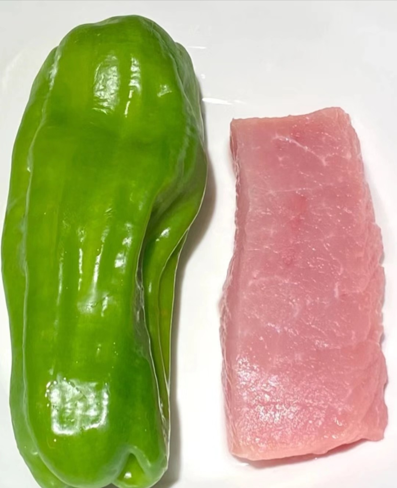
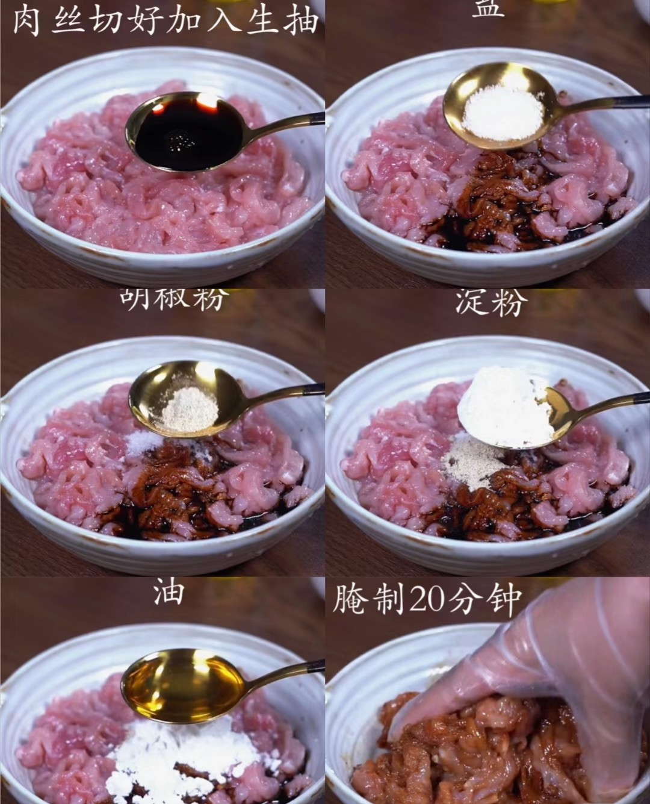
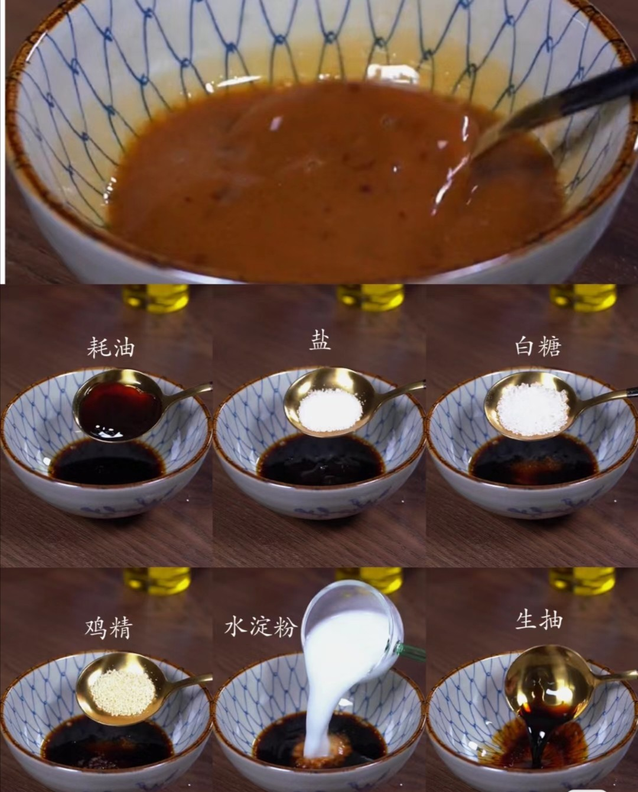
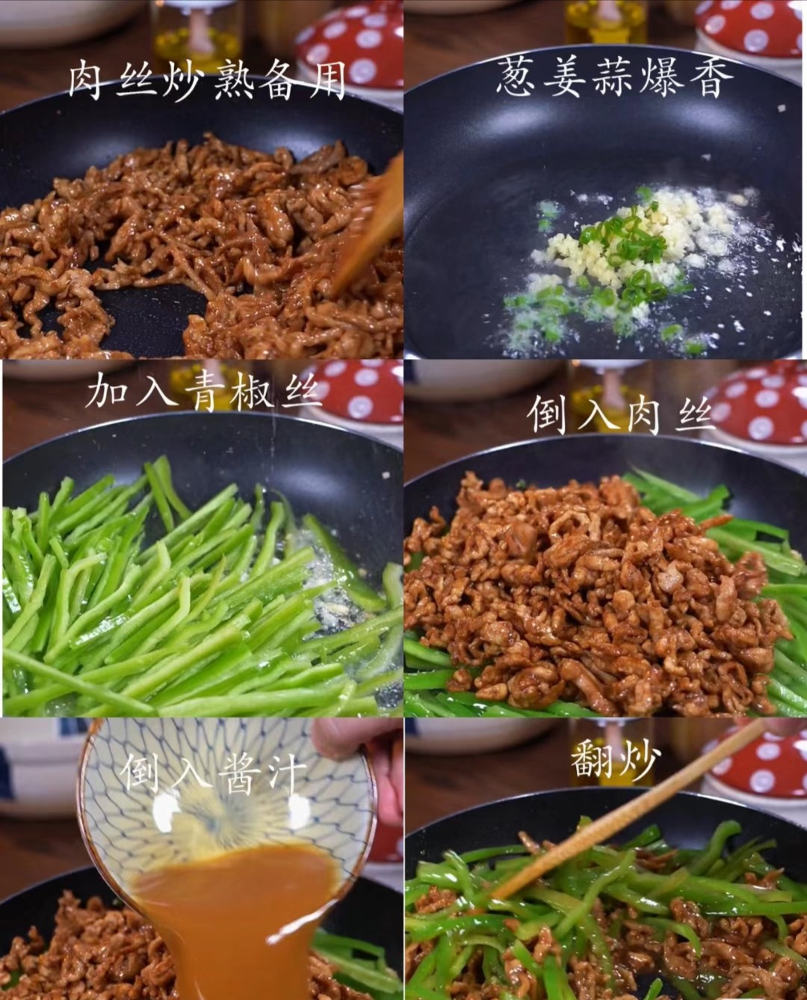
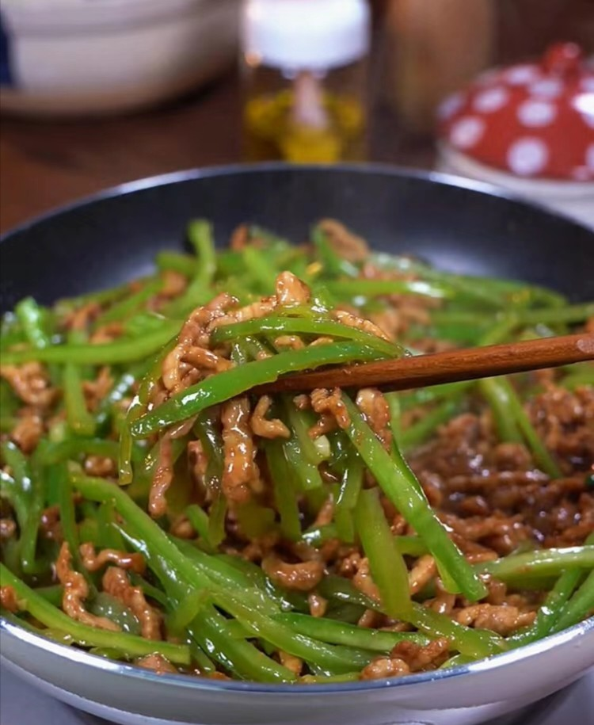

1.备好材料:硕大青绿的大青椒和一块肥瘦相间的精品猪肉，没有的话随便找个青椒和瘦肉也行

2.将备好的肉切成肉丝，加入适量生抽，适量盐，适量胡椒粉，适量淀粉，适量忧，最后用手抓匀腌制20分钟

3.腌制期间，拿出一个小碗，加适量生抽打底，依次加入适量水淀粉混合物，鸡精，白糖，盐，耗油，搅拌均匀即可

4.简单将肉丝炒熟后备用，葱姜蒜爆香后加入青椒丝，适当翻炒至青椒丝将熟时加入备好的肉丝然后加入提前准备的酱料，翻炒均匀后及可出锅
各种食材和调味品的使用都要依照个人口味调整
做饭是一门艺术，急不得，调味料的使用也需要多次使用慢慢掌握它的用度，需要认真的人慢慢摸索慢慢理解，失败也不要紧只要知道是哪出了问题下次就一定能做得更好
感谢你来访问这个网站

下一个在这->麻婆豆腐
上一个在这->番茄炒蛋